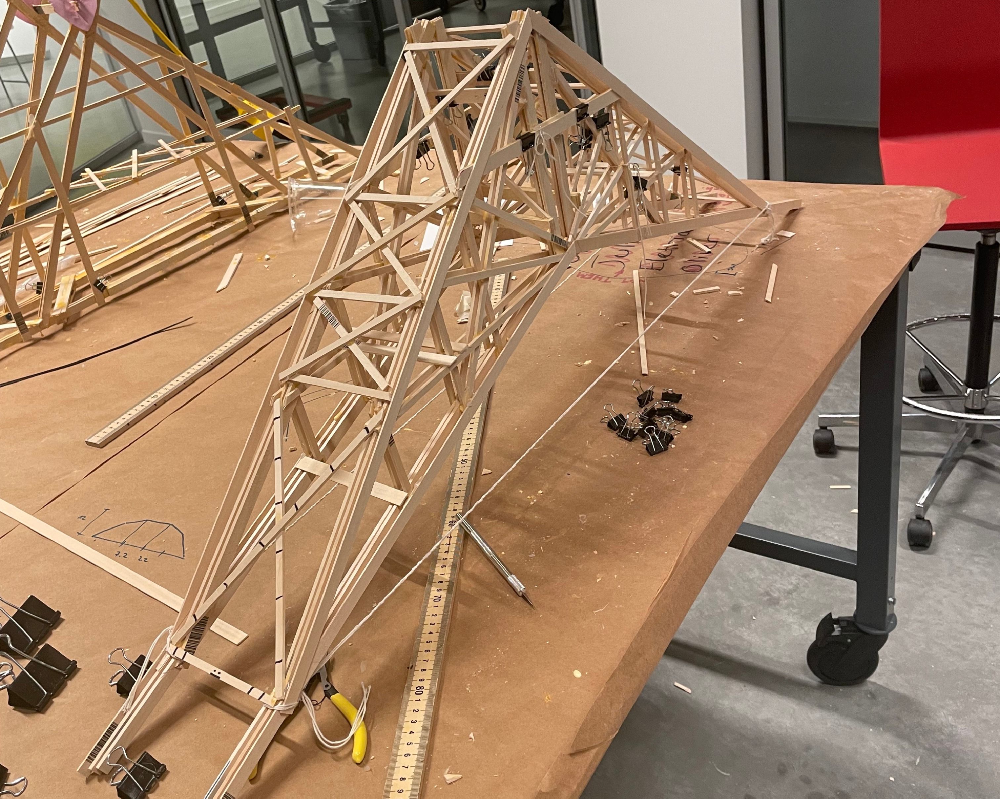

Project Overview
Designed and constructed a lightweight balsa wood bridge capable of supporting 50 times its own weight. The project combined structural analysis, material science, and precision fabrication to create an efficient load-bearing structure.
Key Achievements
- Achieved 50:1 load-to-weight ratio
- Optimized truss geometry through FEA simulations
- Minimized material usage while maintaining strength
- Precise fabrication with tolerances under 1mm
- Successful load testing to failure point
Technical Details
Using finite element analysis in ANSYS, I optimized the truss configuration to efficiently distribute loads while minimizing material usage. The design employed Warren truss geometry with strategic reinforcements at high-stress joints. Careful attention to grain direction and adhesive application ensured consistent joint strength throughout the structure.
Gallery

